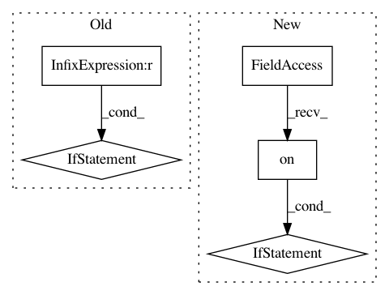

2ceed3bc57e2e890cd5c80d3f38ae544971c30f4,gpytorch/functions/inv_matmul.py,InvMatmul,forward,#InvMatmul#Any#,17
Before Change
def forward(self, rhs, *matrix_args):
matmul_closure = None
if self.representation_tree is None:
mat = matrix_args[0]
matmul_closure = mat.matmul
else:
lazy_var = self.representation_tree(*matrix_args)
matmul_closure = lazy_var._matmul
self.is_vector = False
if rhs.ndimension() == 1:
rhs.unsqueeze_(-1)
self.is_vector = True
After Change
args = [res, rhs] + list(matrix_args)
self.save_for_backward(*args)
if not settings.memory_efficient.on():
self._lazy_var = lazy_var
return res
def backward(self, grad_output):
// Extract items that were saved
In pattern: SUPERPATTERN
Frequency: 3
Non-data size: 5
Instances
Project Name: cornellius-gp/gpytorch
Commit Name: 2ceed3bc57e2e890cd5c80d3f38ae544971c30f4
Time: 2018-05-01
Author: gpleiss@gmail.com
File Name: gpytorch/functions/inv_matmul.py
Class Name: InvMatmul
Method Name: forward
Project Name: cornellius-gp/gpytorch
Commit Name: c517e0b8b34a85b8142b4669c152b6e62c02d8e2
Time: 2019-03-18
Author: gpleiss@gmail.com
File Name: gpytorch/lazy/lazy_tensor.py
Class Name: LazyTensor
Method Name: diag
Project Name: cornellius-gp/gpytorch
Commit Name: a5eb8d66cf4d433cb5fd0a2cb5cd229077ea54f4
Time: 2019-01-02
Author: gpleiss@gmail.com
File Name: gpytorch/lazy/cached_cg_lazy_tensor.py
Class Name: CachedCGLazyTensor
Method Name: _solve